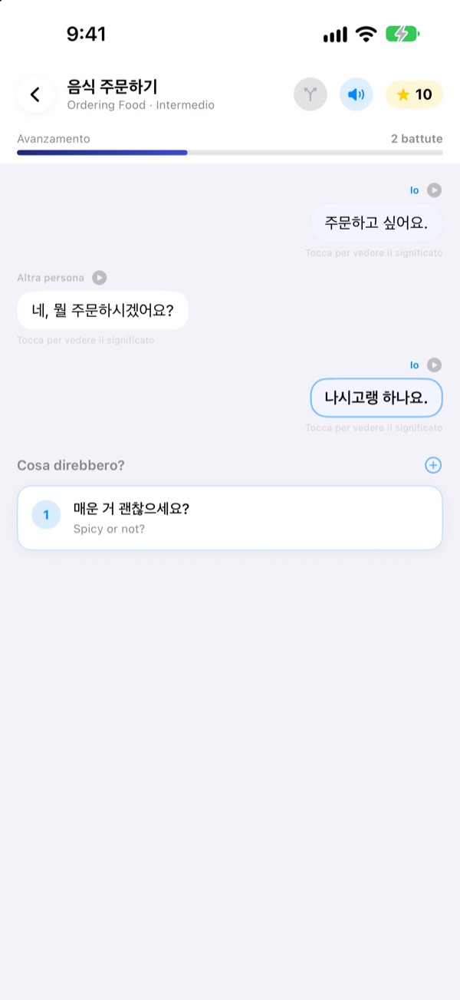
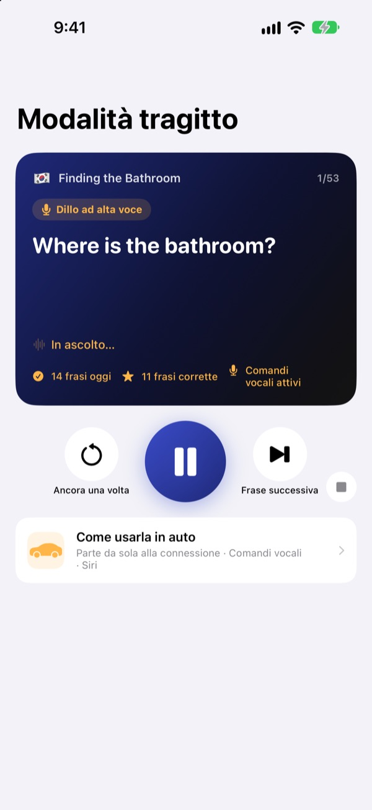
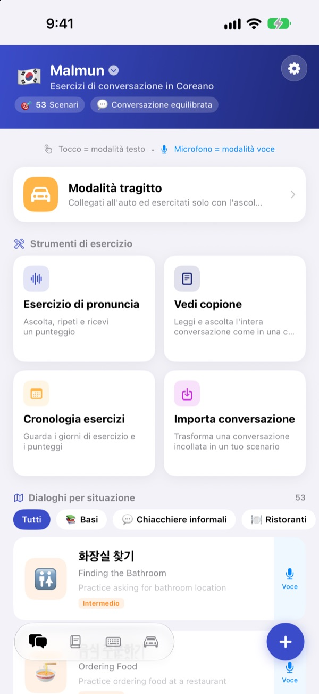
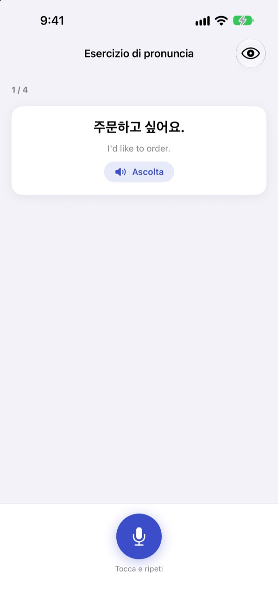

Basta bloccarsi.
Parla tu per primo.
Malmun è un allenatore di conversazione in cui ogni risposta che scegli porta il dialogo da un’altra parte. Impara coreano, giapponese, cinese, spagnolo o indonesiano e, in macchina, allenati solo con le orecchie e la voce.
Dialoghi a bivi, esercizi di pronuncia e vocabolario sono gratis.

Porta avanti tu la conversazione
Ecco “Buongiorno”, un dialogo in indonesiano preso così com’è dall’app. Ogni frase che scegli porta lo scambio in un’altra direzione.
Sapevi la frase, ma non cosa rispondere?
Sul libro i dialoghi vanno sempre secondo copione. Nella realtà l’altra persona ti risponde con qualcosa che non ti aspettavi. Malmun ti fa percorrere prima tutti i bivi di una conversazione, così hai la frase successiva pronta qualunque cosa arrivi. Anche il tragitto verso casa diventa allenamento.
Allenati ad ascoltare mentre guidi
La modalità tragitto suona dagli altoparlanti dell’auto via Bluetooth o CarPlay. Prima senti il significato, un segnale ti dà il tempo di dirlo tu, poi la risposta passa una volta lenta e una a velocità normale.
Avanti e ripeti con i tasti al volante, oppure di’ next, again o slower quando tocca a te. Si mette in pausa durante le indicazioni del navigatore.

Tutte le situazioni di viaggio e di ogni giorno
Ogni lingua ha 53 dialoghi per situazione: basi, chiacchiere quotidiane, ristorante, spostamenti, aeroporto, hotel, shopping, visite ed emergenze.
Se impari l’indonesiano c’è di più: 5 small talk scritti a mano, 3 corsi giornalieri da 6 scene con orario settimanale e 100 parole per i viaggi di lavoro.

Controlla di averlo detto bene
L’esercizio di pronuncia ti dà un punteggio e colora le parole azzeccate e quelle mancate.
Nel copione vedi tutto il dialogo come una chat. Ascoltalo di fila o nascondi i significati per metterti alla prova.

Si comincia in tre passi
- 1
Scegli una lingua
Tocca la bandiera in alto nella schermata principale. Frasi e vocabolario sono salvati separatamente per ogni lingua.
- 2
Apri un dialogo
Tocca le risposte in modalità testo, oppure tocca il microfono e parla: la modalità voce trova la risposta più vicina.
- 3
In auto, modalità tragitto
Collega l’iPhone all’auto e premi play. Non serve guardare lo schermo.
Comandi della modalità tragitto
- Volante: brano successivo
- Frase successiva
- Volante: brano precedente
- La stessa frase un’altra volta
- Tasto play
- Pausa e ripresa
next·skip- Frase successiva
again·repeat- Riascolta
slower·faster- Cambia la velocità di lettura
next scene- Passa al dialogo successivo
stop·pause- Smetti di allenarti
- Siri: “Avvia esercizio del tragitto in Malmun”
- Parti senza toccare l’iPhone
Con l’app in italiano, i comandi vocali si dicono in inglese. Vengono ascoltati solo nel tuo turno, dopo il segnale. La frase in corso appare nelle informazioni di riproduzione dell’auto. Non c’è una schermata dell’app dedicata in CarPlay.
Quasi tutto è gratis. Malmun Pro sblocca il resto.
Gratis
- Small talk a bivi e corsi giornalieri (indonesiano)
- Dialoghi per situazione: basi e chiacchiere quotidiane
- Modalità tragitto, 3 scene al giorno
- Pronuncia, copione, importazione dialoghi, cronologia
- Le mie frasi, schede di vocabolario, tastiera di frasi
- Condividere scenari con gli amici, crearli con l’IA
Malmun Pro
- Tutti i dialoghi per situazione: ristorante, spostamenti, aeroporto, hotel, shopping, visite, emergenze
- Modalità tragitto senza limiti
- Vale per tutte le lingue
Abbonamento annuale o acquisto unico a vita
Trovi i prezzi nell’app e sull’App Store. L’abbonamento annuale si rinnova da solo se non lo disdici almeno 24 ore prima della fine del periodo.
Domande frequenti
Quali lingue posso imparare?
Coreano, giapponese, cinese, spagnolo e indonesiano. L’interfaccia è in italiano, ma i significati delle frasi e i comandi vocali sono in inglese. Per questo l’inglese non compare nell’elenco.
Come si usa in macchina?
Collega l’iPhone all’auto via Bluetooth o CarPlay, apri la modalità tragitto e premi play. L’audio esce dagli altoparlanti e la frase in corso appare in In riproduzione. Puoi anche dire a Siri “Avvia esercizio del tragitto in Malmun”, oppure creare una volta un’automazione nell’app Comandi perché parta appena si collega CarPlay (o il Bluetooth dell’auto).
Il microfono ascolta sempre?
No. Ascolta solo nel tuo turno, dopo il segnale, con il microfono dell’iPhone, e ciò che sente viene elaborato sul dispositivo.
La mia pronuncia non viene riconosciuta.
Il riconoscimento vocale funziona nella lingua che stai imparando. Prova in un posto più silenzioso e controlla che il riconoscimento vocale di quella lingua sia scaricato sul dispositivo.
Come aggiungo la tastiera?
Vai in Impostazioni ▸ Generali ▸ Tastiera ▸ Tastiere ▸ Aggiungi nuova tastiera e scegli la tastiera di Malmun. Mentre scrivi, tocca il globo per passare a lei. Non serve l’accesso completo. Per mostrare meno frasi, tocca l’icona della tastiera in basso a destra nella schermata principale ▸ Gestisci tastiera.
Non vedo uno scenario condiviso da un amico.
La condivisione passa da iCloud, quindi dovete aver effettuato entrambi l’accesso a iCloud. Se ancora non compare, chiudi del tutto l’app e riaprila.
Cosa serve per creare scenari con l’IA?
Inserisci nell’app la tua chiave API di Anthropic e scrivi un argomento: viene creato un nuovo dialogo. Tutto il resto funziona anche senza chiave.
Come disdico o chiedo un rimborso?
I pagamenti li gestisce Apple. Per disdire: Impostazioni dell’iPhone ▸ Account Apple ▸ Abbonamenti ▸ Malmun. Per un rimborso, rivolgiti ad Apple su reportaproblem.apple.com.
Ho cambiato iPhone e il Pro è sparito.
Accedi con lo stesso Account Apple e in Malmun tocca Impostazioni ▸ Malmun Pro ▸ Ripristina acquisti.
Dove vengono salvati i miei progressi?
Non serve un account. I tuoi dati restano sul dispositivo e nel tuo iCloud. Niente pubblicità né tracciamento: vengono inviate solo statistiche d’uso anonime e rapporti sugli errori. Bug e richieste sono benvenuti anche su GitHub Issues (github.com/M1zz/IndonesianSmallTalk/issues).
Domande o suggerimenti? Scrivi a leeo@kakao.com, usa Impostazioni ▸ Invia feedback nell’app o cercaci su Instagram: @lee25_ios.